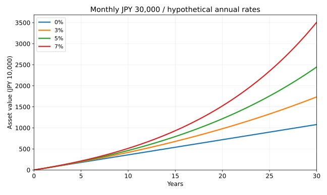
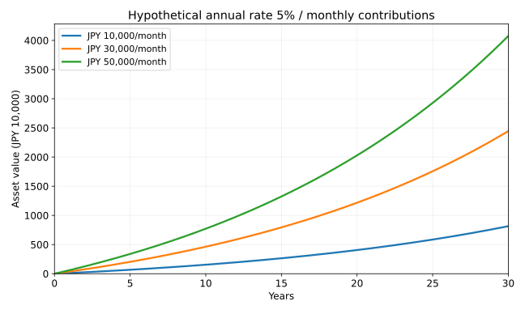

新NISAは何がすごい？
初心者向けにメリット・デメリット・始め方をわかりやすく解説
公開： ｜ 更新：
著者・編集：トピック基地 ｜ 調査・計算日：2026年11月6日（UTC）
「新NISAはお得らしいけれど、何を買えばよいのか」「毎月1万円でも意味があるのか」。最初に押さえたいのは、NISAは利益への税負担を軽くする制度であって、利益を生む商品そのものではない、という点です。使う口座の仕組みと、そこで保有する商品のリスクを分けて考えましょう。
- 成人の新NISAは、年間最大360万円、保有する商品の取得価額で合計1,800万円まで。上限まで投資する義務はありません。
- 非課税保有期間は無期限ですが、元本保証はありません。損失の税務上の扱いにも注意が必要です。
- 毎月1万・3万・5万円、年率0・3・5・7%、10・20・30年の36条件を同じ計算式で比較。いずれも将来予測ではない仮定です。
本記事は一般的な制度解説で、特定の商品や金融機関の利用を勧めるものではありません。制度・商品条件は変わる場合があるため、手続き時には公式資料と金融機関で再確認してください。
1. 新NISAとは何か・旧NISAとの違い
NISAは、対象の株式や投資信託を専用口座で保有した場合に、売却益や配当・分配金に対する日本での税が非課税になる仕組みです。2024年から拡充された制度を、以前の制度と区別して「新NISA」と呼んでいます。預金の利息が増える制度でも、国が運用損失を補填する制度でもありません。［1］［3］
| 項目 | 旧つみたてNISA | 旧一般NISA | 2024年からの新NISA |
|---|---|---|---|
| 新規買付 | 2023年で終了 | 2023年で終了 | 制度は恒久化 |
| 年間投資枠 | 40万円 | 120万円 | つみたて120万円＋成長240万円 |
| 非課税保有期間 | 購入した年から最長20年 | 購入した年から最長5年 | 無期限 |
| 併用 | 同一年はどちらかを選択 | 同一年に2枠を併用可能 | |
旧制度の商品は新NISAの1,800万円とは別枠で、元の非課税期間内は保有できます。新NISAへそのまま移すロールオーバーはできません。既に持つ商品を買い直す場合にも売買や新たな枠の消費が伴うため、「旧制度だからすぐ売る」と決める必要はありません。［4］
2. つみたて投資枠・成長投資枠と上限の読み方
| 項目 | つみたて投資枠 | 成長投資枠 |
|---|---|---|
| 年間上限 | 120万円 | 240万円 |
| 主な対象 | 長期・積立・分散投資向けの基準を満たした投資信託等 | 上場株式・投資信託等。一部の商品は除外 |
| 買い方 | 定期・継続的な積立 | 一括・積立 |
| 非課税保有限度 | 合計1,800万円。そのうち成長投資枠で保有できるのは1,200万円まで | |
例えば毎月3万円なら年間36万円なので、対象商品を積み立てる場合はつみたて投資枠の範囲内です。「成長」という名称は、つみたて投資枠より高い収益を保証する意味ではありません。つみたて投資枠だけで1,800万円を使うこともできます。対象商品は購入前に金融庁の一覧と販売会社で確認しましょう。［2］［6］
上限は時価ではなく取得価額で数える
100万円で買った商品が150万円になっても、保有限度を使う額は原則100万円です。反対に、売却で再利用できる総枠も売却額ではなく、その商品の取得価額分です。再利用は翌年以降であり、売った年に年間枠が戻るわけではありません。年間枠の使い残しも翌年へ上乗せできません。［2］
「1,800万円になるまで運用できる」という理解も不正確です。値上がりによって評価額が1,800万円を超えても、そのことだけを理由に売る必要はありません。一方、元本を使い切った後の新規買付には、売却による枠の再利用などが必要です。
3. 新NISAの5つのメリット
① 利益を受け取る際の日本での税負担を軽くできる
利益が出たときに非課税の効果があります。利益がない場合に補助金が出る仕組みではありません。また、外国の配当にかかる現地税や、投資信託の内部で発生する税・費用まで、すべてなくなるわけではありません。［3］［5］
② 非課税期間の終了を理由に売る必要がない
保有期間に期限がないため、資金を使う目的や家計に合わせて売却時期を考えられます。ただし、長く持てることと、長く持てば必ず利益が出ることは別です。
③ 少額の積立から、自分の予算で利用できる
年間上限を使い切る必要はありません。金融機関の商品ごとの最低積立額を確認し、生活費と当面の支出を確保したうえで継続可能な金額を決められます。増額より先に、家計への負担を点検することが大切です。
④ 2つの投資枠を目的に応じて使える
積立を中心に使う方法も、成長投資枠を併用する方法もあります。選択肢が多い分、投資対象と費用を理解せず商品数だけを増やさないようにしましょう。同じ年の2枠は同じ金融機関で利用します。［2］
⑤ 売却した商品の取得価額分を翌年以降に再利用できる
資金を引き出した後にも、将来の年間枠の範囲で再び活用できます。これは頻繁な売買を有利にする仕組みではありません。売買のたびに価格変動や手数料、再投資するタイミングのリスクが発生します。［2］
4. 初心者が知っておくべきデメリットとリスク
- 元本割れ：株式を含む投資信託は、企業業績や金利・景気などに左右されます。売却時に積立元本を下回ることがあります。
- 損失を税務上活用できない：NISA口座の損失は、課税口座の利益との損益通算や損失の繰越控除ができません。［3］
- 為替：為替ヘッジなしの外国株式投信は、円高が円換算の評価額を押し下げる要因になります。円で買える商品でも、為替リスクがなくなるとは限りません。
- コスト：信託報酬や売買に伴う費用は非課税制度とは別です。保有期間が長いと費用の差が積み重なります。［7］
- 使途と期間の不一致：近い将来に必ず支払う学費などを投資すると、下落中に取り崩す可能性があります。換金にも日数がかかり、注文時に受取額が確定しない投資信託があります。
また、非課税でも物価上昇は防げません。将来の金額が増えていても、そのお金で買える物が同じ割合で増えるとは限りません。金融機関の変更は年単位で可能ですが、その年に既に買付をしている場合などには制約があります。手続き前に確認してください。［2］
5. S&P500とオルカンは何が違う？
S&P500は米国の代表的な大型株で構成する指数です。一方、「オルカン」は「eMAXIS Slim 全世界株式（オール・カントリー）」という投資信託の愛称です。同商品はMSCI ACWI（配当込み、円換算ベース）に連動する投資成果を目指します。全世界株式型の投資信託すべてを指す正式名称ではありません。指数と、それに連動を目指す投資信託は同じものではありません。商品によって対象指数や費用・為替ヘッジの有無を確認する必要があります。名称の説明のために商品を例示しており、推奨するものではありません。［8］［9］［10］
| 観点 | S&P500 | MSCI ACWI |
|---|---|---|
| 地域 | 米国 | 先進国・新興国。米国も含む |
| 企業規模 | 主に大型株 | 大型・中型株 |
| 分散の特徴 | 米国への集中が大きい | 地域は広いが各国を均等には配分しない |
| 共通する注意 | 株式市場の下落や大型企業への集中の影響を受ける。世界分散でも損失を防げるわけではない | |
両方を持っても、米国株部分が重複するので単純に分散が2倍になるわけではありません。「米国だけにするか、他地域も保有するか」という配分の違いと、手数料・家計の余裕を見ましょう。どちらが将来高いリターンを得るかは分かりません。実際の過去データを読むときの注意点は、第4号の長期投資比較で配当・為替・下落を含めて解説しています。次の計算は、その過去実績を延長したものではありません。
6. 毎月1万円・3万円・5万円：36条件の積立シミュレーション
毎月末に一定額を積み立て、年率0%・3%・5%・7%が一定で続くと仮定しました。年率はファンドの継続費用控除後を想定した比較用の値で、実在商品の予想利回りではありません。金額は円単位で四捨五入しています。スマホでは表の中を左右にスクロールできます。
毎月1万円を積み立てる場合
| 期間 | 仮定年率 | 積立元本 | 最終資産額 | 元本との差額 |
|---|---|---|---|---|
| 10年 | 0% | 1,200,000 | 1,200,000 | +0 |
| 10年 | 3% | 1,200,000 | 1,394,480 | +194,480 |
| 10年 | 5% | 1,200,000 | 1,543,632 | +343,632 |
| 10年 | 7% | 1,200,000 | 1,710,517 | +510,517 |
| 20年 | 0% | 2,400,000 | 2,400,000 | +0 |
| 20年 | 3% | 2,400,000 | 3,268,544 | +868,544 |
| 20年 | 5% | 2,400,000 | 4,058,045 | +1,658,045 |
| 20年 | 7% | 2,400,000 | 5,075,364 | +2,675,364 |
| 30年 | 0% | 3,600,000 | 3,600,000 | +0 |
| 30年 | 3% | 3,600,000 | 5,787,130 | +2,187,130 |
| 30年 | 5% | 3,600,000 | 8,153,759 | +4,553,759 |
| 30年 | 7% | 3,600,000 | 11,694,526 | +8,094,526 |
毎月3万円を積み立てる場合
| 期間 | 仮定年率 | 積立元本 | 最終資産額 | 元本との差額 |
|---|---|---|---|---|
| 10年 | 0% | 3,600,000 | 3,600,000 | +0 |
| 10年 | 3% | 3,600,000 | 4,183,440 | +583,440 |
| 10年 | 5% | 3,600,000 | 4,630,895 | +1,030,895 |
| 10年 | 7% | 3,600,000 | 5,131,552 | +1,531,552 |
| 20年 | 0% | 7,200,000 | 7,200,000 | +0 |
| 20年 | 3% | 7,200,000 | 9,805,633 | +2,605,633 |
| 20年 | 5% | 7,200,000 | 12,174,135 | +4,974,135 |
| 20年 | 7% | 7,200,000 | 15,226,091 | +8,026,091 |
| 30年 | 0% | 10,800,000 | 10,800,000 | +0 |
| 30年 | 3% | 10,800,000 | 17,361,391 | +6,561,391 |
| 30年 | 5% | 10,800,000 | 24,461,277 | +13,661,277 |
| 30年 | 7% | 10,800,000 | 35,083,578 | +24,283,578 |
毎月5万円を積み立てる場合
| 期間 | 仮定年率 | 積立元本 | 最終資産額 | 元本との差額 |
|---|---|---|---|---|
| 10年 | 0% | 6,000,000 | 6,000,000 | +0 |
| 10年 | 3% | 6,000,000 | 6,972,400 | +972,400 |
| 10年 | 5% | 6,000,000 | 7,718,158 | +1,718,158 |
| 10年 | 7% | 6,000,000 | 8,552,587 | +2,552,587 |
| 20年 | 0% | 12,000,000 | 12,000,000 | +0 |
| 20年 | 3% | 12,000,000 | 16,342,722 | +4,342,722 |
| 20年 | 5% | 12,000,000 | 20,290,224 | +8,290,224 |
| 20年 | 7% | 12,000,000 | 25,376,819 | +13,376,819 |
| 30年 | 0% | 18,000,000 | 18,000,000 | +0 |
| 30年 | 3% | 18,000,000 | 28,935,652 | +10,935,652 |
| 30年 | 5% | 18,000,000 | 40,768,795 | +22,768,795 |
| 30年 | 7% | 18,000,000 | 58,472,630 | +40,472,630 |
グラフ：金額よりも前提の違いを見る


同じ利回り・同じ期間なら、月3万円の結果は月1万円の3倍、月5万円は5倍になります。一方、期間が2倍でも最終額は単純な2倍とは限りません。運用益を再び運用する複利の影響があるためです。ただし、実際の相場ではリターンの順序も影響し、平均年率が同じでも積立結果が同じになるとは限りません。
月5万円を30年続けた元本は1,800万円です。他のNISA買付がなく、売却もない前提では成人の総枠と一致し、年間60万円はつみたて投資枠の120万円以内です。利益で評価額が1,800万円を超えても、その超過分が直ちに課税される意味ではありません。既に使った枠がある人や、分配金を口座外に受け取り買い直す人には、この前提をそのまま当てはめられません。
7. 計算方法と前提・再現データ
月額をP、仮定する実効年率をr、月数をnとし、月率m＝(1＋r)1/12−1に換算しました。月末積立の最終額はP×｛(1＋m)n−1｝÷mです。r＝0の場合はP×nとします。年率を単純に12で割る方法とは異なります。例えば年率5%とは、月々の複利を合わせて1年で1.05倍になる条件です。
- 初期資産0円、毎月末に入金。追加の一括投資・引き出し・積立額変更はなし。
- 運用益は内部で再投資し、現金分配を外部で再購入する際の新たな枠消費はモデル化しません。
- 利回りは円建て・名目・継続費用控除後の仮定。購入時手数料・為替交換手数料等は別途ゼロと仮定。実在投信の実績や将来の費用を示していません。
- 適格なNISA利用を想定し、投資家段階の日本での税を差し引いていません。外国税・ファンド内部の税が必ずゼロになるという意味ではありません。
- 物価変動と実際の相場変動を含みません。年率が一定のため、暴落や途中の含み損をこの図から読み取れません。
- 計算途中は50桁精度のDecimalを使用し、最後だけ1円単位へ四捨五入。差額は表示した最終額−元本で、表の加減算が一致するようにしています。
36条件の閉形式計算を、別実装の月次残高計算でも照合しました。再現用の全結果CSV、前提・結果JSON、計算手順を公開しています。Python計算コード（テキスト）で表も生成しており、手入力の推計値ではありません。
8. 新NISAの始め方：口座開設より先に目的を決める
- 使う時期と金額を整理：生活費・急な支出への備え・近い将来の確定支出と、長期で運用できる資金を分けます。
- 金融機関を比較：購入したい対象商品、積立額の下限、各種費用、サポート、使いやすさを確認。銀行と証券会社では取扱商品が異なります。
- NISA口座を申し込む：本人確認書類やマイナンバーの確認など、金融機関所定の手続きを行います。既存口座がある場合は二重開設しないように確認します。
- 目論見書と枠を確認：目的に合う商品を選び、つみたて投資枠・成長投資枠の対象であることを確認します。
- 無理のない積立額と引落方法を設定：注文がNISA口座扱いになっているか、初回の購入後にも確認します。
- 定期的に見直す：家計や使う時期が変わったときに積立額・資産配分を点検します。毎日売買する必要はありません。
NISAは原則1人1口座です。口座開設だけで投資が始まるわけではなく、商品購入の設定が必要です。既に別の金融機関で持っている場合や変更を希望する場合は、所定の書類と受付期限を確認してください。［5］
9. 投資信託を選ぶときの確認ポイント
まず「何に投資するか」を見て、次に「いくらかかるか」を確認します。同じ指数名でも、為替ヘッジ、分配方針、運用方法、指数との連動のずれは同一ではありません。純資産残高や運用報告書も確認し、人気ランキングだけで判断しないようにしましょう。
- 投資先：国・地域、株式か債券か、上位銘柄への集中。複数商品を合わせた重複も確認。
- 費用：購入時手数料、信託報酬、その他費用、換金時の信託財産留保額。信託報酬だけが総費用ではありません。
- 分配方針：分配金が多いことだけで利益が多いとはいえません。分配すると基準価額がその分下がる関係も理解します。
- 換金条件：申込締切・受渡日・休業日・繰上償還の条件。急に必要な資金をすぐ全額引き出せる前提にしないこと。
- 書類：交付目論見書と最新の運用報告書を確認し、分からない商品は説明を受けてから判断。
費用の種類は資産運用業協会の解説［7］、つみたて対象商品は金融庁の一覧［6］で確認できます。低コストであることは比較の一要素ですが、元本保証や将来の好成績を意味しません。
10. 暴落したときに考えるべきこと
下落したら、まず直近に必要な現金を確保できているかを確認します。そのうえで、資金を使う時期、資産配分、値下がりに耐えられる範囲が当初の想定と変わったかを整理しましょう。生活が苦しいのに積立を続けることも、怖くなって理由なく全売却することも、目的とのずれを生む場合があります。
積立額の減額や停止は、家計を守るための選択肢です。「安くなったから」と借入で買い増したり、非課税枠を埋めるために無理をしたりする必要はありません。使う時期が近づいた資金は、相場の回復待ちだけに頼らず、現金などへの配分を段階的に考えることも大切です。
「過去は戻ったから今回も何年で戻る」とは言い切れません。下落幅だけでなく、高値回復にどの程度の時間を要したか、観測期間や通貨が何かも確かめましょう。第4号の最大下落と回復期間の読み方も参考にしてください。
11. よくある質問
- Q. 毎月1万円でも始める意味はありますか？
- 少額でも積立元本は積み上がります。ただし、必要資金や商品リスクを理解したうえで継続できる額を選ぶことが先です。月1万円の試算は比較の材料であり、資産が必ず増えるという約束ではありません。
- Q. 年間360万円を使い切らないと損ですか？
- 上限は利用義務ではありません。生活費や予備資金を優先し、使途に合う資金だけを投資することが大切です。使わなかった年間枠を翌年に加算することはできません。［2］
- Q. 買った商品を売れば、すぐ枠が戻りますか？
- 総枠の再利用は取得価額分について翌年以降です。再利用する年も年間投資枠の範囲内で買い付けます。売った年の年間枠は復活しません。［2］
- Q. 配当金ならすべて非課税ですか？
- 国内上場株式・ETF・REITなどの配当・分配金は、原則として証券会社経由の株式数比例配分方式で受け取る必要があります。投資信託の分配金と受取方法のルールは同一ではありません。外国で源泉徴収される税は残る場合があります。［3］［5］
- Q. 分配金を再投資すると枠を使いますか？
- 現金分配を受け取りNISAで買い直す場合は新たな買付となり、枠を使います。ファンド内部で配当等を再投資する運用とは区別してください。本記事の試算は内部での複利運用を仮定しています。［5］
- Q. NISAで損をしたら、課税口座の税金を減らせますか？
- NISAの損失は課税口座と損益通算できず、繰越控除もできません。非課税のメリットと損失時の扱いをセットで理解しましょう。［3］
- Q. S&P500とオルカンは、どちらが必ず有利ですか？
- 将来の優劣は断定できません。米国への集中度、他地域への分散、商品ごとの費用などを比べ、値下がり時にも保有方針を説明できるかを考えましょう。
- Q. ビットコインもNISAで買えますか？
- 暗号資産の現物は現在のNISA対象商品ではありません。制度の対象商品と、暗号資産そのものの仕組み・リスクは分けて理解してください。暗号資産については関連記事で解説しています。［3］［5］
- Q. 未成年でも今すぐ成人と同じ枠を使えますか？
- 2026年11月時点では使えません。金融庁が案内する2027年1月からの未成年者向け拡張は、利用枠や払出しの条件が成人と異なります。申込み時点の公式説明を確認してください。［1］
12. まとめ：非課税枠より、目的と継続できる金額を先に
新NISAの大きな利点は、利益への日本での課税を抑えながら、期限を気にせず保有できることです。一方で、商品選択のリスクやコストは残り、損失を税務上通算できない制約もあります。制度の有利さだけを理由に、必要な現金まで投資することは避けたいところです。
36条件の試算は、積立額・期間・仮定利回りを変えると結果がどう動くかを確認するための道具です。将来を正確に当てるものではありません。まず家計と使う時期を整理し、公式資料と目論見書を読み、自分が理解できる範囲で検討しましょう。
参考資料・出典
制度・資料の確認日：2026年11月6日（UTC）。将来の制度変更と、同日時点で利用できる制度を区別しています。市場価格・過去利回りを第5号の試算に使用していません。リンク先は更新されるため、適用日をあわせて確認してください。
- 金融庁：NISAを知る — 制度の基本、非課税期間、2027年1月の未成年者向け拡張。
- 金融庁：よくある質問 — 年間枠・保有限度・売却後の再利用・金融機関変更。
- 国税庁：No.1535 NISA制度 — 2026年4月1日現在の法令等、非課税・損失・配当の受取方法。
- 金融庁：2023年までのNISA — 旧一般・旧つみたてNISAの保有期間と新制度との関係。
- 日本証券業協会：NISAに関するQ&A（2026年9月版、PDF） — 手続き、外国税、分配金再投資、対象商品の扱い。
- 金融庁：つみたて投資枠対象商品 — 基準を満たす商品一覧。
- 資産運用業協会：投資信託のコスト — 手数料・信託報酬・その他費用。
- S&P Dow Jones Indices：S&P 500 — 指数の投資対象・概要。
- MSCI：MSCI ACWI Index（PDF） — 先進国・新興国の大型・中型株を対象とする指数。
- 三菱UFJアセットマネジメント：オルカンと除く日本型の違い — 商品名・愛称と対象指数の確認。